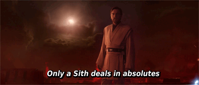

On Twitter
I use twitter quite a lot, and I’ve been meaning to explain why and how I use it. I think this is becoming increasingly necessary as I get more followers. They follow for a wide variety of reasons and some context may help minimize confusion.
I know this is a long post. New followers should at least read the How to Engage with Me section.
Why Twitter?
Let’s start with a little history. I created a twitter account in 2008. I tried to use it a few times, but couldn’t get a sense of why twitter was useful. It was a lot of noise with no signal to be found. A few years ago, I tried again. That time I found the signal that made it worth braving the noise.
Over the past few years, twitter has enabled me to meet people all over the world with similar interests, passions, and values. People who have helped me learn and expand my worldview. People who support me and challenge me. People who I now consider friends – yes, one can develop and maintain meaningful friendships over the internet.
I cannot adequately use words to describe how valuable this has been to me, but I’ll try. It may be a surprise to some people, but I used to be a very quiet, passive person who rarely socialized or spoke up. The short answer for why is a combination of isolation and social anxiety. The friends I made on twitter helped immensely with both. It’s hard to feel isolated when you have friends all over the world willing to support you, who care about you. Sometimes it’s easier to start finding your voice in text when you have social anxiety.
When I went to conferences in other cities, suddenly I had friends to look forward to hanging out with. When one of us had a rough day, people were at the ready to jump on a hangout to provide support. Girl Develop It Pittsburgh found the initial volunteers it needed on twitter. People on twitter provided me with the encouragement, support, and resources to start speaking about impostor syndrome. Twitter helped me meet people who I now consider very close friends. Ultimately, it’s about the people, but the tool helped me find them.
How I Use Twitter
In the previous section, I talked a little bit about using twitter as a tool to meet people and a tool for overcoming social anxiety. These were the initial ways I used twitter, but I have expanded to using this tool for so much more.
Uses
Sometimes I use twitter as a tool for activism. I might be trying to use it to raise awareness about a specific issue or calling attention to some harmful behavior.
Sometime I use twitter as a tool for education. I will spend time having difficult conversations and trying to teach an audience of one or many about a specific subject. Topics I tend to educate on include: feminism, diversity in tech, intersectionality, and impostor syndrome. I’m not an expert on any of these topics, but I know more than some, so I try to help.
Sometimes I use twitter to socialize. I have a lot of friends on there in differing time zones, and it is often the most convenient place for us to joke, share, and chat.
Sometimes I use twitter for humor and silliness. Contrary to popular belief, feminists do have a sense of humor. My humor tends to be sarcastic, absurd, or involve A LOT OF SHOUTING!
Sometimes I use twitter to vent. All of that activism and educating is hard, and it takes its toll. Venting is necessary to let off steam and regroup, so I can keep on keeping on. Sometimes I vent with friends because they need to do the same.
Sometimes I use twitter to post pictures of my cats or random information about them. I’m pretty much the cat mom equivalent of that person who won’t stop telling you about all the stuff their baby does (see example below).

Sometimes I use twitter to livetweet movies for fun. I created a separate account for that because it’s a LOT of tweeting, and I am ok with separating it.
I switch between all of the above types of tweeting with a fair amount of frequency. My impression is the context switches are fairly obvious to people who have followed me for a while.
Tagging
I try to hashtag certain content, so it is easy for people to mute. I usually hashtag conference tweeting for this reason.
I try to remember to tag certain content because it’s triggering for followers, and they want to mute it. I try to trigger warn certain content or sections of tweets when I can. For a while, I trigger warned my entire account because I was doing activism about sexual assault and rape culture. I’m not perfect in any of this, and the 140 character limit sometimes makes it difficult, but I try.
If I regularly hit on a topic that’s triggering for you, please feel free to let me know. I make no promises that I’ll be able to stop or tag it for you, but I will see if we can make something work.
Posting Articles and Retweeting
I often post articles or retweet content that I find interesting or worthy of discussion. Unless I specfically say so, I do not intend for this to indicate full agreement with or endorsement of all content.
Following
I follow a reasonable number of people, but I only regularly read a few. I heavily use lists. If I stop being interested in your feed, I may unfollow you. An unfollow is not an indication of my thoughts on you as a person – it just means your feed wasn’t a good fit for me. I’m trying to clean up my follows and keep things as lean as possible.
Blocking
I block people fairly easily. Twitter is a space where I choose to engage with people who increase the value of the experience for me. If you don’t respect my boundaries or the boundaries of my friends, I may block you. If you’re an asshole, I may block you. If you regularly say racist/sexist/homophobic/transphobic/ableist/etc. shit, I will very likely block you.
I’ve noticed on a few occasions that people I like or don’t even know blocked me. I wondered to myself, “why?”, and then let it be. They have a right to control their space on twitter. I am not entitled to interact with them. I recommend you deal with being blocked the same way.
If you think I accidentally blocked you and are sad about this, feel free to email me about it. Otherwise, deal with it. You’re not entitled to interact with me.
Disclaimer
My thoughts on twitter are my own and not those of my employer or other organizations I participate in.
How to engage with me
I’ve been noticing a lot of common points of confusion or frustration for people who try to engage with me on twitter. Here is some information that I hope will clear some of that up.
I context switch a lot. It is to your benefit to follow me for a little while to get a sense of what those contexts look like. Alternatively, ask if I’m being serious or joking about something. Assumptions without context tend to end poorly. If you do not enjoy the varying ways I use twitter or the context switching, I suggest not following me. It sounds like my feed is not a good fit for how you use twitter, and that’s totally ok.
Recognize twitter is 140 characters. It is not a space that allows for nuance, proper grammar, or good explanations. Asking for clarification on something is often useful. If I’m doing a long string of tweets (as I am wont to do when in activist or educator mode), read the associated tweets in my timeline for additional information before engaging. My email is on my about page if you want longform communication.
Read my 101 off limits list before engaging with me. If you hit one of the points on there, I’m just going to point you to it anyway. Intentionally hitting the points in there knowing I have requested not to discuss them shows you do not respect boundaries. Don’t do that.
Know that I have the right to end conversations or decline to engage in them. I do not always have the time or energy to educate or discuss. Asking to stop or declining to start is not rude. It is setting a boundary and asking you to respect it. I am not obligated to be constantly available to anyone. This is not my job, and nobody pays me to do it. I have a full-time job, groups I organize, and other things I want to spend my time on. When you get angry when I ask to stop, it sounds like you are angry that I have not prioritized your wants and needs over my own. Don’t do that.
Unless I say an absolute all/every/always/etc., it’s very unlikely I mean an absolute. As my Star Wars loving friend reminded me, only a Sith deals in absolutes.

Conclusion (and tldr)
Twitter is a useful tool. I have a bunch of friends on there. I use twitter a lot of different ways. I use it how I like. Respect my boundaries, and enjoy twitter however you like besides that.